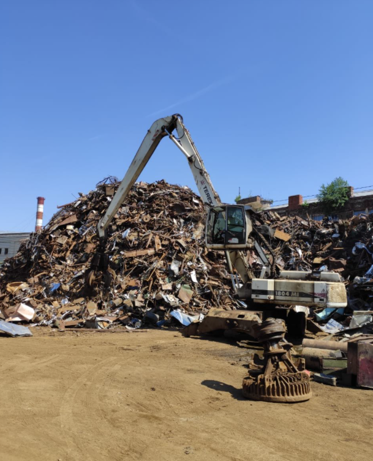
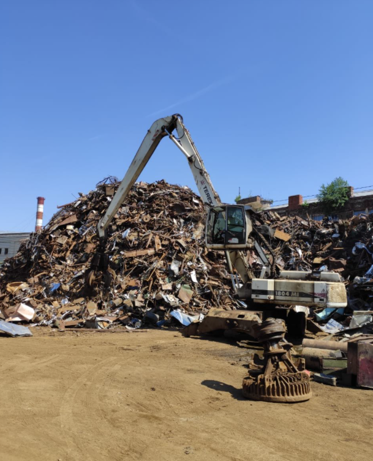

"СтальРесурс-Тверь"
Прайс лист:

Лом меди - 630 руб/кг.
Лом латуни - 345 руб/кг.
Лом аллюминия - 107 руб/кг.
Лом свинца - 90 руб/кг.
Лом АкБ - 72 руб/кг.
Лом нержавеющей стали 8% - 83 руб/кг.
Лом цинка - 80 руб/кг.
Лом магния - 25 руб/кг.

Лом меди - 630 руб/кг.
Лом латуни - 345 руб/кг.
Лом аллюминия - 107 руб/кг.
Лом свинца - 90 руб/кг.
Лом АкБ - 72 руб/кг.
Лом нержавеющей стали 8% - 83 руб/кг.
Лом цинка - 80 руб/кг.
Лом магния - 25 руб/кг.